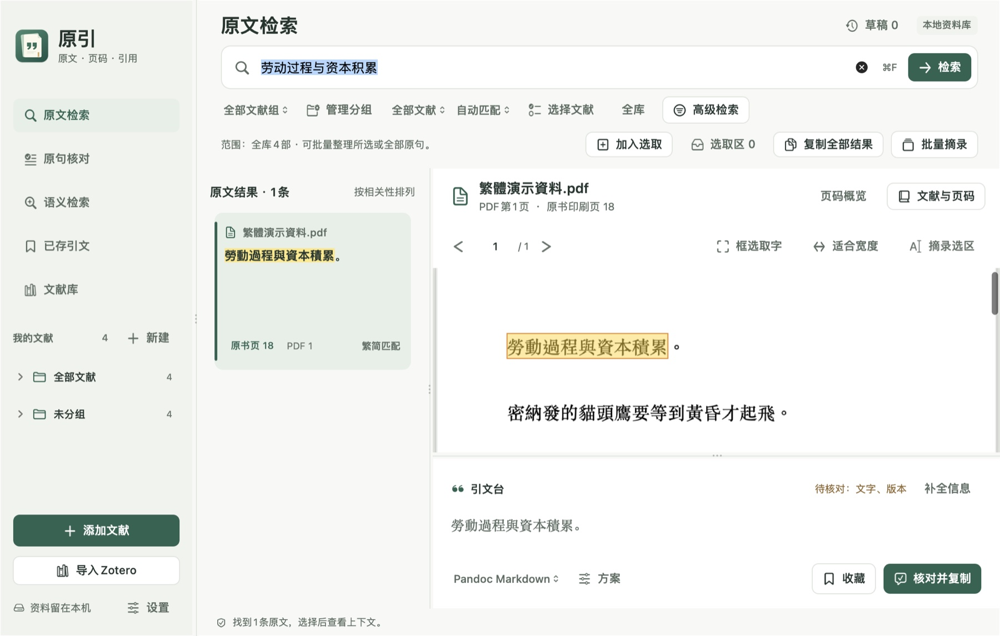
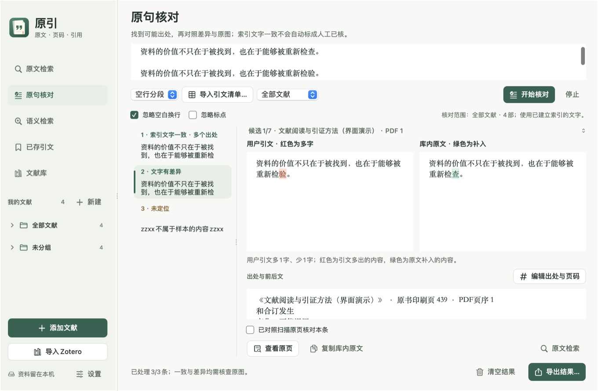

从扫描件里找原文
导入文件夹，对扫描页做中英文 OCR。按原句、近似片段或组合条件检索，也可以只查选中的文献组。
为人文社科写作设计的 Mac 工具
在自己的 PDF 里找回记得的那句话，点开便是原页。核过文字和页码，就能把引文连同 Zotero 引用键带进论文。
v0.12.0 Apple 芯片 macOS 13+

浏览器演示
用简体查繁体，或试着输错一个字。这里用三页示例资料，输入只在浏览器里处理。
找到 1 条 · 繁简匹配
繁體演示資料
原页节选 繁简匹配
勞動過程與資本積累。
核对时，可翻到这一页查看引文的前后文。
[@yuanyinDemo, p. 18]
在同一个窗口完成
导入文件夹，对扫描页做中英文 OCR。按原句、近似片段或组合条件检索，也可以只查选中的文献组。
粘贴一段话或导入一份引文清单。查看增字、缺字和候选出处，回原页核实，再把结果与高亮截图一起导出到 Excel。
校准一次连续页段后，同一页段可沿用。带上 Zotero 引用键，按 Pandoc Markdown、LaTeX 或纯文本复制，也可单独收藏。
写成了「检验」，原文是「检查」。原句核对把两个字标在各自的句子里，点「查看原页」即可复核。

选择本机 Zotero 的一个分类，预览变化后同步 PDF 附件和题录。可手动刷新，也可以保留自己整理的分组。
连接本机 Ollama 向量模型后，可以用问题检索相关段落。Codex 等工具也能通过只读 MCP 查出处、比引文或提出版本对应页建议。
并排看原文、译本或再版。确认过的对应页可保存，下次回找可直接跳到相应位置。
解压后把「原引」移到「应用程序」。打开 App，点「添加文献」，选一份 PDF 或文件夹开始。
适用 Apple 芯片及 macOS 13 或更新版本。当前安装包采用临时签名，尚未经 Apple 公证。OCR 引文请对照原页确认。